为什么需要订阅#
目前，ChatGPT Free、Go、Plus、Pro、Business、Edu 和 Enterprise 套餐都可以使用 Codex，但可用功能和使用额度有所不同。
Free 和 Go 适合体验轻量的本地编码任务，不支持 Codex Cloud；如果需要运行云端任务，或者希望获得更高的使用额度，可以选择 Plus 或更高等级的套餐。
| 套餐 | 月费（美元） | Codex 可用情况 |
|---|---|---|
| Free | 免费 | 适合体验快速、轻量的本地编码任务，不支持 Codex Cloud |
| Go | $8 | 适合轻量编码任务，不支持 Codex Cloud |
| Plus | $20 | 提供更多 Codex 使用额度，并支持 Web、CLI、IDE、iOS 及云端集成 |
| Pro | $100 / $200 / $500 | 在 Plus 的基础上提供三档更高额度，其中 $500 档支持 Ultrafast mode |
| Business | 年付 $20/用户/月；月付 $25/用户/月 | 至少 2 人起订，适合需要团队工作区和管理功能的组织 |
| Enterprise / Edu | 联系销售团队 | 面向企业和教育机构，提供更完善的安全、权限、审计及数据控制能力 |
对于个人开发者，建议先从 Plus（$20/月） 开始。它已经包含 Codex Cloud 和常用的云端集成功能，可以满足日常开发需求。如果后续额度不够，再根据实际使用情况升级到 Pro。
前提条件#
- 能正常访问国际网络（需要代理工具，这里不展开）
- 一个注册好的 ChatGPT / OpenAI 账号
- 支持国际支付的方式（详见下方）
如果还没有账号，需要先准备一个国外手机号用于接收注册验证码，可以使用专门的接码平台完成注册。
可以试试：https://hero-sms.com
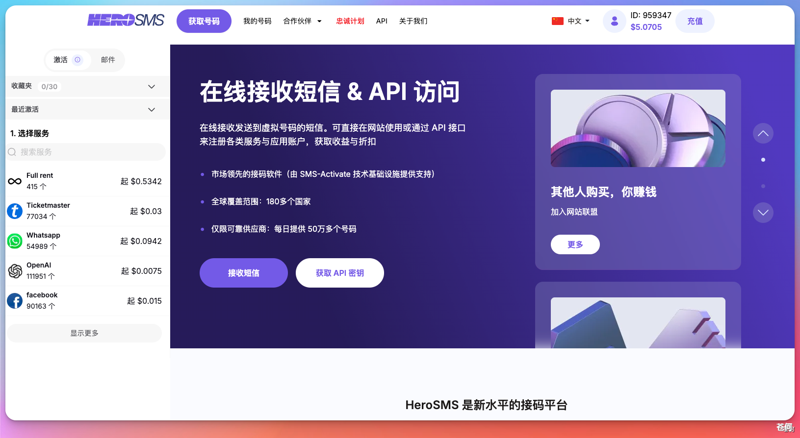
方法一：苹果礼品卡（最稳定，推荐优先尝试）#
支付宝购买#
适合已有 iOS 设备或愿意准备一台的用户。整个流程在国内支付宝内完成充值，不需要境外银行卡。
准备物品：
- 一台苹果设备（iPhone / iPad，可以是二手，能正常使用 App Store 即可）
- 已注册好的海外区 Apple ID（注册时选美国或新加坡，不需要绑定国内手机号）
- 国内支付宝（正常使用即可）
操作步骤：
- 在苹果设备上退出国内 Apple ID，登录准备好的海外区 Apple ID
- 打开支付宝，将定位切换为「美国旧金山」，支付宝会自动切换为国际版界面
- 在支付宝功能区找到「苹果礼品卡」，购买 $20 额度
- 购买成功后复制兑换码，打开 App Store，点击头像 → 「兑换礼品卡或代码」，粘贴充值
- 打开 ChatGPT App，登录账号，进入设置订阅 Plus，选择 Apple ID 余额支付

给Apple id充值礼品卡：
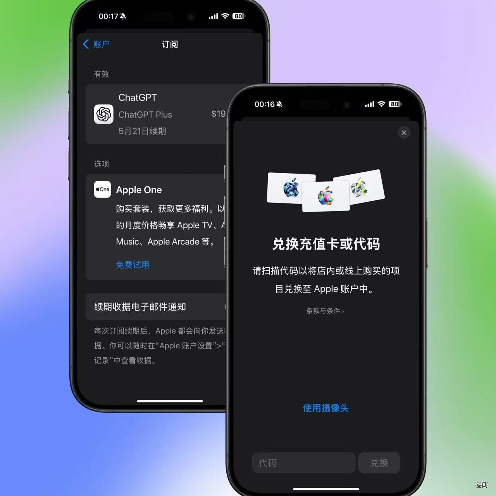
苹果官网购买#
前提准备：
1、一个美区的APPID。 2、招行 VISA 卡
操作步骤：
1、Clash 代理选择台湾地区（非必须，可视情况）
2、打开苹果官方礼品卡购买页面：
地址：https://applegiftcard.apple.com
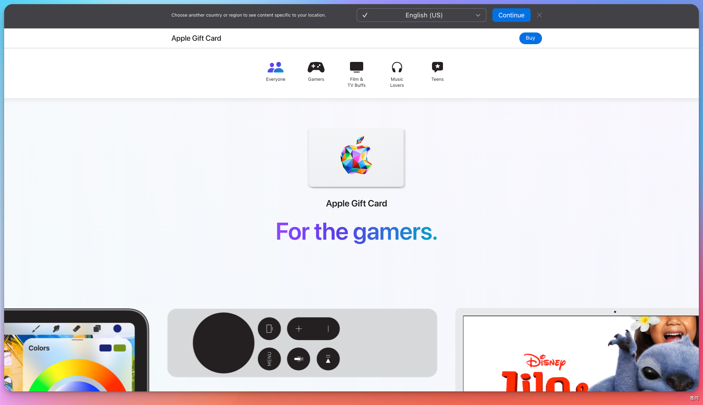
点击这里的 buy：
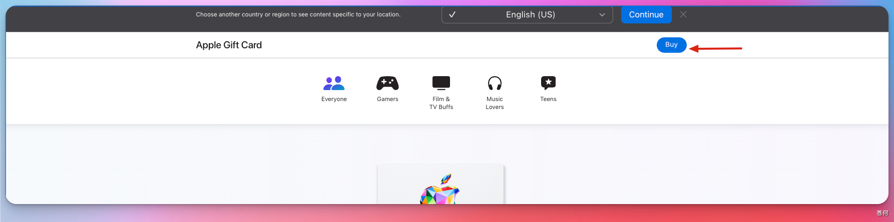
选择 Email：

填写相关信息，接收人和赠送人姓名和邮箱。（这里名字可以随便填）

然后点 add to Bag

然后选择 check out，这里需要登录你的美区 appid

选择支付方式 VISA 卡：

然后这个地方填自己的 VISA 卡信息就好啦：

最后一个是确认：

第三方#
这里也可以购买，信息来源于社区，建议自行甄别。
方法二：土耳其区 App Store（第三方经验，价格优先）#
如果你的核心诉求是降低长期订阅成本，可以参考低价区 App Store 的做法：单独准备一个土耳其区 Apple ID，通过该区礼品卡给 Apple ID 余额充值，再在 ChatGPT iOS App 里用 App Store 应用内购订阅。

图源：App Store Price 文章。本小节后续截图除特别说明外，均整理自同一篇文章。价格、排名和汇率只代表源文截图时的状态，实际付款前一定以 App Store 结算页显示为准。
适合谁：
- 已经有 iPhone / iPad，愿意单独维护一个海外区 Apple ID。
- 能接受第三方礼品卡渠道的不确定性。
- 更看重订阅价格，而不是最省心的官方直连支付体验。
详细流程#
第一步：核对当前低价区
先打开 App Store Price 的 ChatGPT 价格页，选择 ChatGPT Plus 月付项，看当前各地区价格。源文截图显示土耳其区价格较低，但低价区会随 App Store 定价、汇率和税费变化，操作前必须重新核对。
第二步：确认网络节点与账号地区一致
源文建议先准备土耳其节点，并在 IP 检测页面确认当前出口地区。核心原则是：注册 Apple ID、填写地区信息、登录 App Store 时，地区信息要尽量保持一致，减少触发安全验证的概率。

第三步：注册土耳其区 Apple ID
打开 account.apple.com 注册新的 Apple ID。注册时选择土耳其地区，按页面提示填写邮箱、手机号和验证码。源文说明旧的 appleid.apple.com 入口也可用，但 Apple 当前页面名称可能会变化，以实际页面为准。

第四步：补齐 Payment Address
注册完成后，在 Apple 账号或 iPhone / iPad 的 App Store 账户设置里补齐 Payment Address。即使不绑定土耳其本地银行卡，Apple 也可能在购买或兑换时要求补充账单地址。
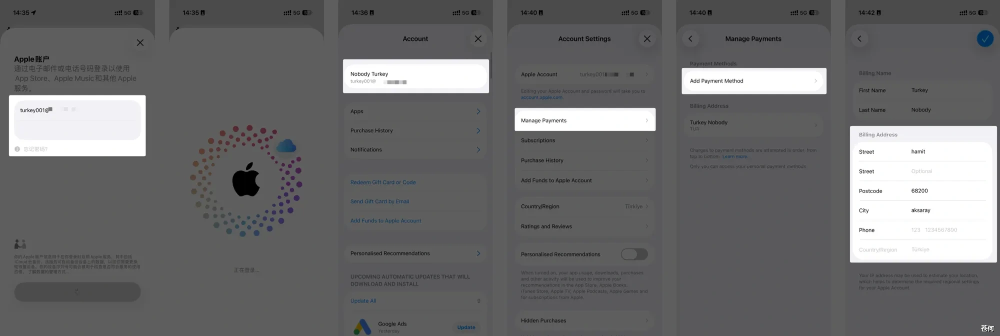
第五步：购买土耳其区 App Store 礼品卡
源文提到土耳其区礼品卡可以通过淘宝、闲鱼等渠道购买，也可以在土耳其数字商品平台购买。它以 oyunfor.com 为示例：注册并登录后，在站内找到 App Store 礼品卡，选择所需面值并加入购物车。

第六步：选择支付方式并付款
源文示例中，Oyunfor 支持信用卡和 Binance Pay。信用卡页面里会出现不同支付通道，部分通道可能要求土耳其本地支付方式，源文选择了可用的国际卡通道。截图中的示例为 1000 土耳其里拉礼品卡，并叠加约 2.5% 手续费，实际手续费以付款页为准。
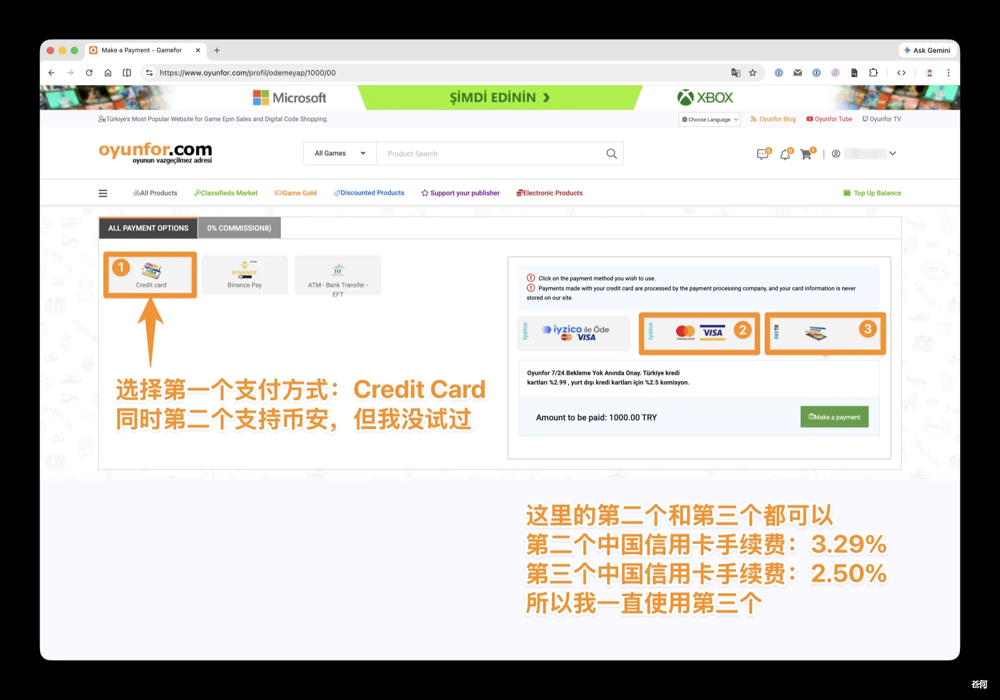
随后进入支付页，填写银行卡信息并确认付款。源文里的银行卡信息已经做了遮挡；你自己操作时不要把银行卡、验证码、礼品卡兑换码截图发给任何人。

如果银行或支付通道要求 3D Secure / 短信验证码，按页面提示完成验证。
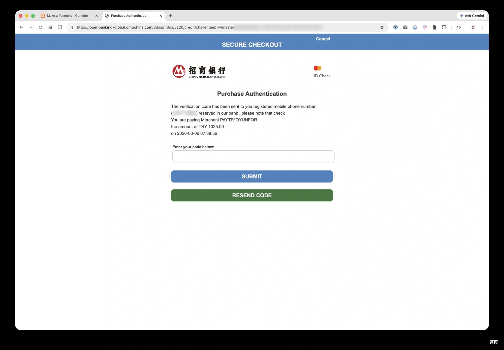
第七步：收取并兑换礼品卡
付款成功后，礼品卡通常会通过邮件发送。源文的邮件截图中露出了兑换码，所以这里不再放图。拿到兑换码后，打开 App Store，点击头像，进入「兑换礼品卡或代码」，把土耳其区礼品卡兑换到同一个土耳其区 Apple ID。
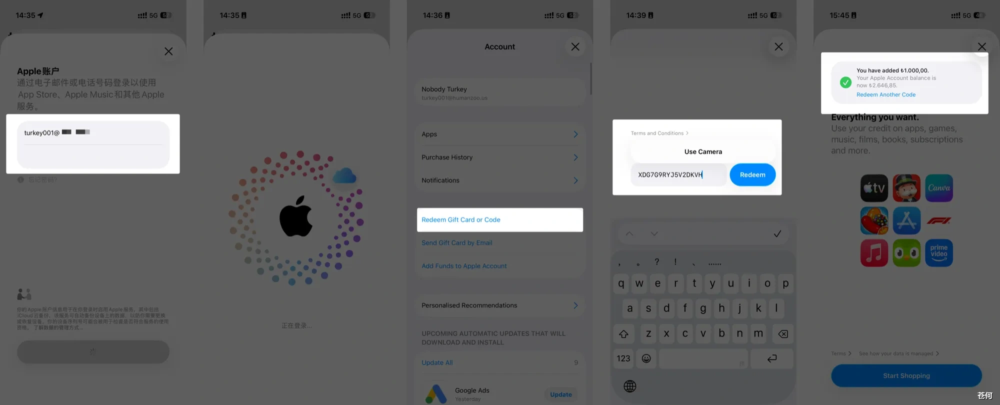
第八步：在 ChatGPT App 内购买订阅
在 iPhone / iPad 的 App Store 登录这个土耳其区 Apple ID，用它下载 ChatGPT App。如果之前 ChatGPT 是用其他地区 Apple ID 下载的，源文建议先删除再用当前 Apple ID 重新下载。打开 ChatGPT App 后登录你的 ChatGPT 账号，进入订阅页，选择 Plus / Pro，用 Apple ID 余额完成 App Store 应用内购。
后续如果开启自动续费，需要保证这个 Apple ID 余额足够；如果余额不足，续费可能失败。
注意事项：
- 不要只看网页截图里的价格，最终价格以 App Store 付款页为准。
- 礼品卡有区域限制，土耳其区礼品卡通常不能给其他区 Apple ID 充值。
- 礼品卡渠道质量差异很大，避免一次性充值太多。
- 如果后续要续费，需要保证 Apple ID 余额足够，或者提前补充礼品卡余额。
- 如果你更在意稳定和售后，优先用前面的美国 / 新加坡区礼品卡方案。
方法三：安卓 Google Play（备选）#
Visa 卡购买#
适合没有 iOS 设备、但拥有能够境外支付的 Visa 卡的用户。整个流程在 Google Play 与手机 ChatGPT 上完成。
准备物品：
- 一台 Android 设备（能够正常安装 Google Play 即可）
- 注册好的 Google 账号
- 注册好的 ChatGPT 账号
- 一张能够进行海外支付的 Visa 卡
操作步骤：
- 进入 PC 端 Google Play，登录谷歌账号，点击右上角头像，将该页面拉到最下方，找到服务条款项目：
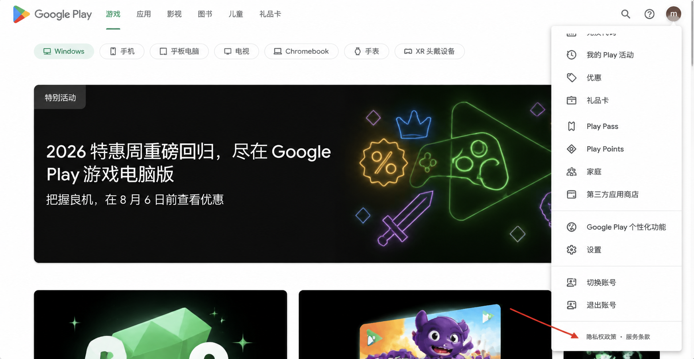
找到其中的国家/地区版本，记住此时的地区：
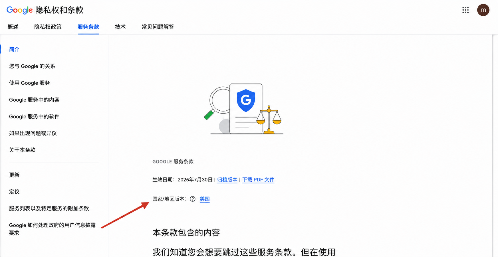
打开你的 Clash 等代理，选择相同的地区。
回到 Google Play 页面，点击右侧下拉菜单中的「付款和订阅」：
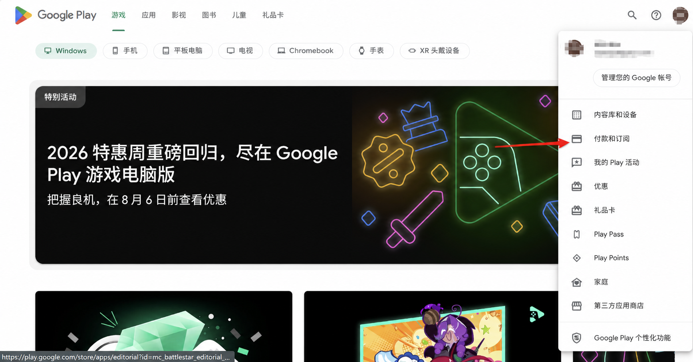
- 点击「添加支付方式」，添加信用卡和借记卡，此时添加你能够支付的 Visa 卡。注意地区与前面服务条款中的地区保持一致；必要时可使用 DeepSeek 等生成真实的国外地址。
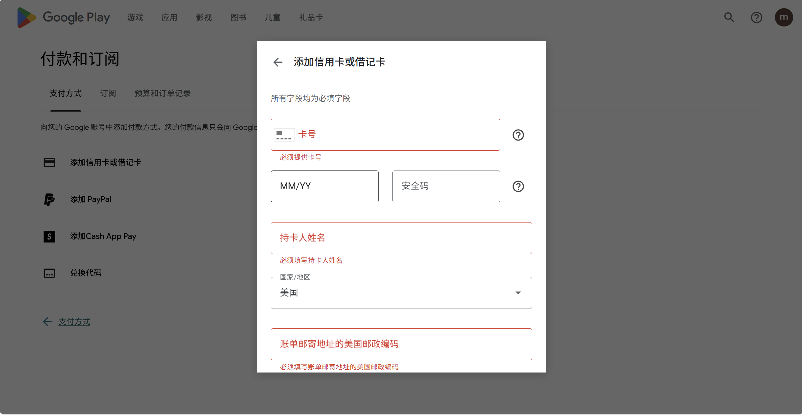
- 完成后查看手机端 Google Play，点击头像打开设置：
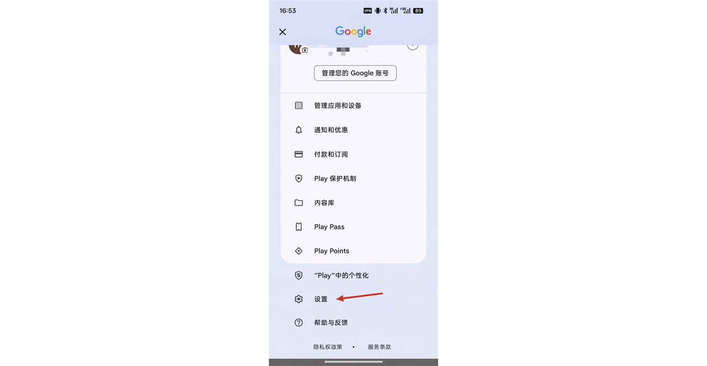
点击「常规」下的「账号和设备偏好设置」：
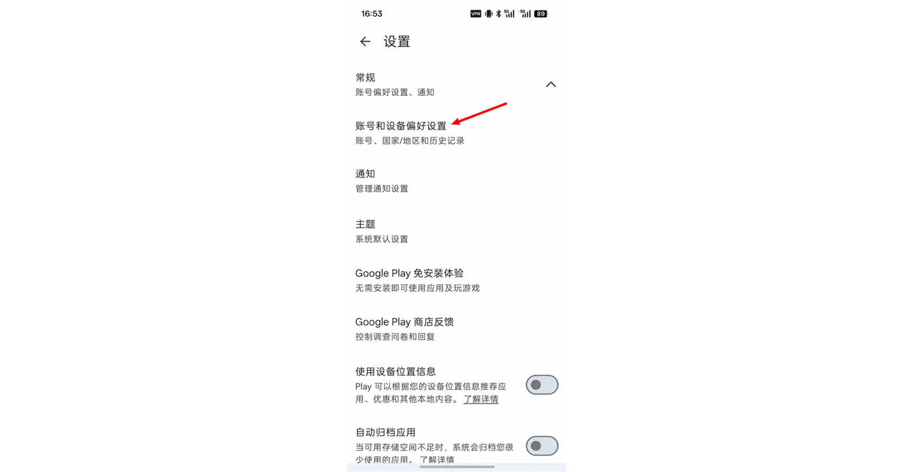
查看「国家/地区和个人资料」，确认地区与上文服务条款中的地区一致：
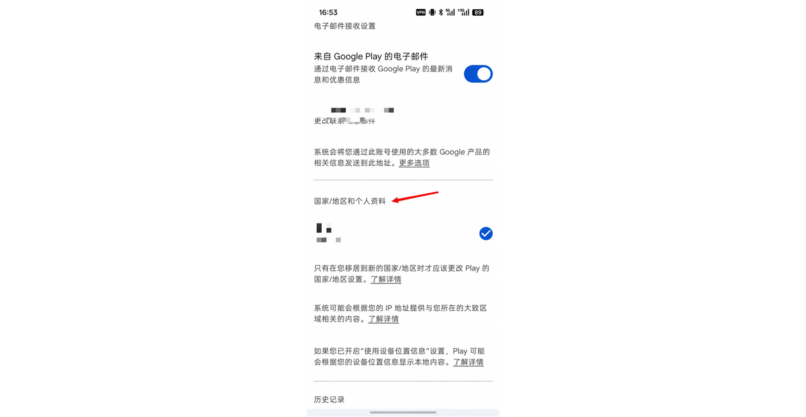
- 在手机端 Google Play 中下载 ChatGPT，登录账号后直接点击升级 Plus，然后支付即可。若支付不成功，检查该 Visa 卡是否支持人民币付款；部分卡只支持对应地区货币。
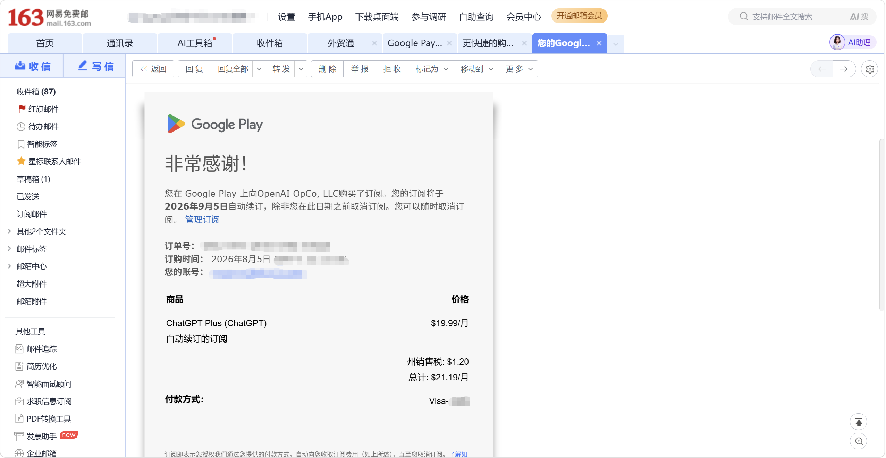
方法四：AI MEMBER 卡密自助充值（省去海外支付步骤-操作更简单）#
如果不想折腾海外 Apple ID、礼品卡或地区切换，也可以购买一张 ChatGPT Plus 充值卡密，再到 AI MEMBER 充值中心自助提交。整个流程都在浏览器里完成，适合已经有 ChatGPT 账号、但不方便使用海外支付方式的用户。
准备物品：#
购买卡密地址：https://www.ai-member.icu
一个可以正常登录的 ChatGPT 账号
支付宝或商品页当前支持的其他付款方式
AI MEMBER 网站购买后得到的 CDKEY
其他ChatGPT Pro 100刀、200刀、Claude Pro、Grok Super等会员充值也可参考此文档
第一步：选择适合自己账号的 Plus 商品#
打开 AI MEMBER 发卡网，在「ChatGPT」分类里选择支持卡密自助提交的 Plus 商品。本文截图使用的是其中的 GPT Plus 官方ios充值商品。
下单前先把商品说明看完，尤其要确认自己的账号状态是否符合要求。
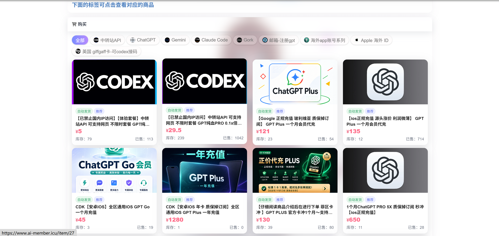
第二步：填写订单信息并付款#
在商品页填写常用联系方式，再设置一个订单查询密码。这个密码只用于查询订单，不是 ChatGPT 密码，建议单独设置并自己记好。随后填写验证码，选择页面当前可用的支付方式，按提示完成付款。
AI MEMBER Plus 商品下单信息示例
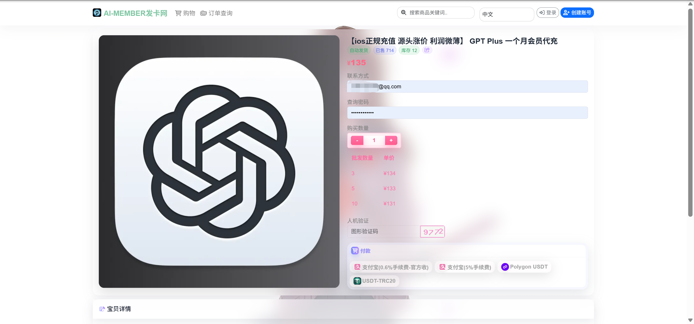
付款完成后先别急着关闭页面，保存好订单号，并复制订单中自动发放的 CDKEY。如果暂时没有看到卡密，可以打开 订单查询，使用订单号或下单时填写的联系方式查询。
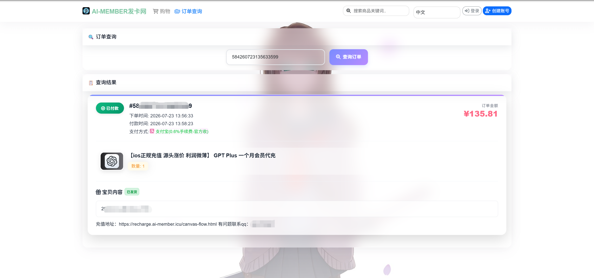
第三步：进入充值中心并验证卡密#
打开 AI MEMBER 充值中心，确认页面顶部选中的是「GPT」和「中文」。把刚才得到的 CDKEY 粘贴到输入框，点击「验证卡密」。
AI MEMBER ChatGPT Plus 充值中心
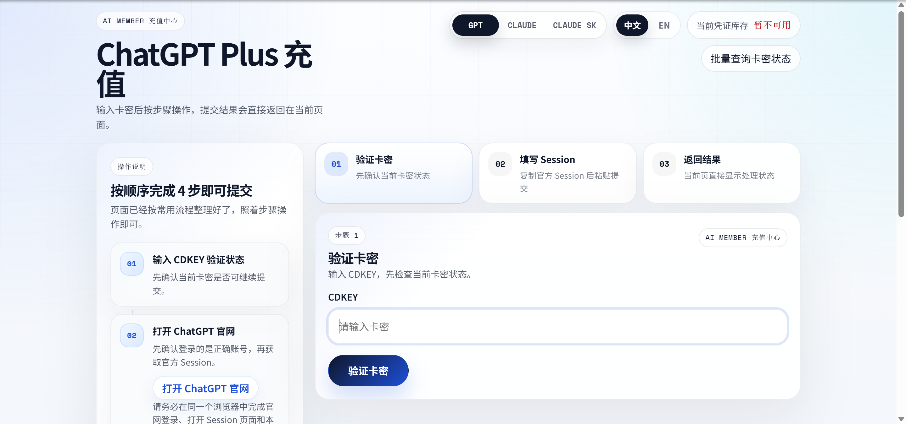
验证通过后，页面会进入 Session 提交步骤。如果提示卡密不可用、商品不匹配或当前状态不能提交，先核对订单和商品类型，不要反复提交。
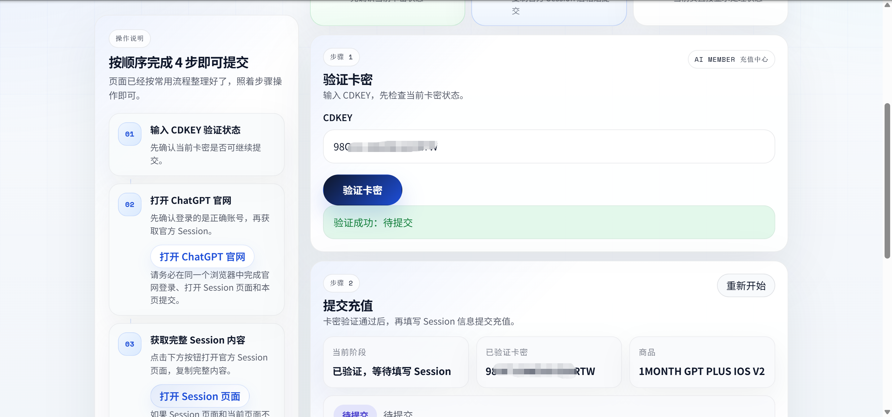
第四步：在同一个浏览器中获取 Session#
这里最容易出错的地方，是拿错了登录账号。请在当前浏览器中点击「打开 ChatGPT 官网」，确认登录的就是准备充值的账号；然后返回充值页，点击「打开 Session 页面」。
官方 Session 页面地址是：
https://chatgpt.com/api/auth/session
页面打开后会显示一段 JSON 内容。使用 Ctrl + A 全选、Ctrl + C 复制，内容不要删减，也不要手动修改。
ChatGPT 官网登录与 Session 获取步骤
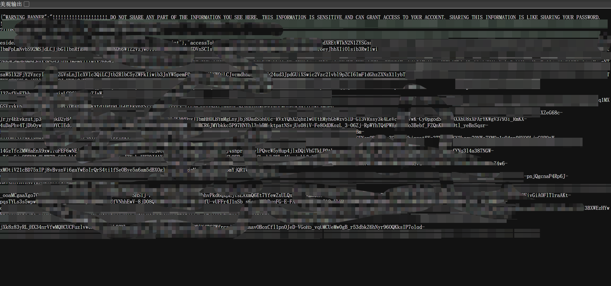
第五步：返回充值页并提交#
回到充值中心，把刚才复制的完整内容粘贴到 Session 输入框。页面如果弹出账号邮箱确认，请认真核对，确定是要充值的账号后再提交。
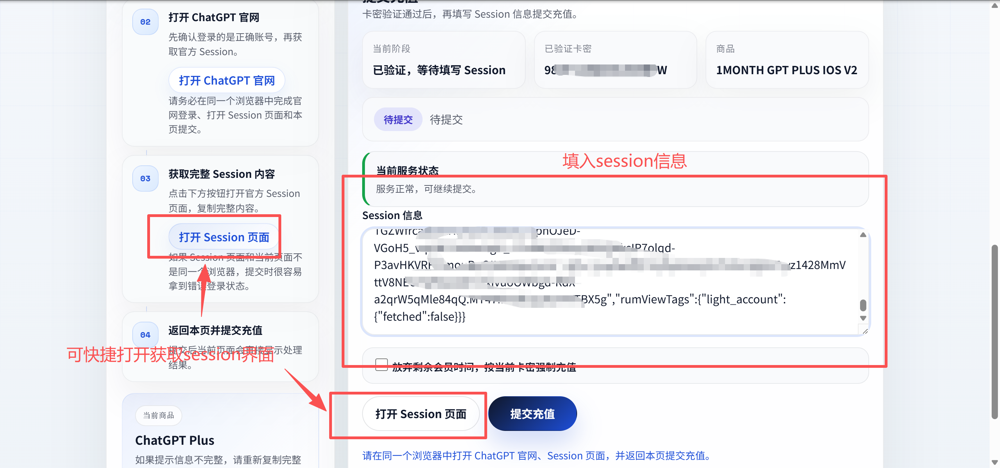
点击「提交充值」后保持页面打开，不要重复点击。处理完成后，当前页面会显示商品、账号、完成时间和处理状态。
第六步：确认 Plus 是否到账#
重新打开 ChatGPT，在账号设置中查看当前套餐是否已经变为 Plus。若充值页显示成功，但 ChatGPT 暂时没有更新，可以先重新登录 ChatGPT。
常见问题#
Q：订阅后 Codex 额度够用吗？
Plus 按 token 计费（2026 年 4 月起），日常开发任务普通使用量通常可以撑一整个月。如果额度用完，可以单独购买额外额度，也可以等下月重置。
Q：Plus 和 Pro 区别大吗？
Pro 的 Codex 使用额度是 Plus 的 5 倍，适合重度用户或需要大量并行任务的场景。普通开发者先从 Plus 开始，不够用再升级。
Q：可以用现有手机而不买二手设备吗？
可以。如果你的设备能正常使用海外区 Apple ID，不需要专门买二手。建议不要在自己常用的国内账号设备上频繁切换 ID，长期使用建议准备一台专用设备。
订阅后验证#
登录 ChatGPT App 或网页端，在账号设置里确认套餐显示为 Plus 或以上，然后进入 Codex 入口检查功能是否正常可用。
下一步#
下一步：连接第三方 API。